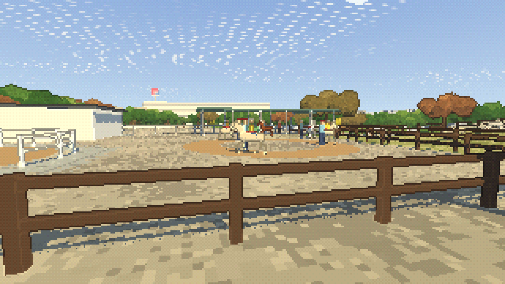
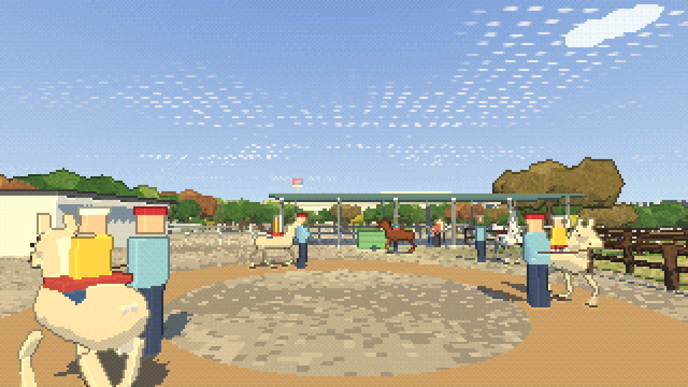
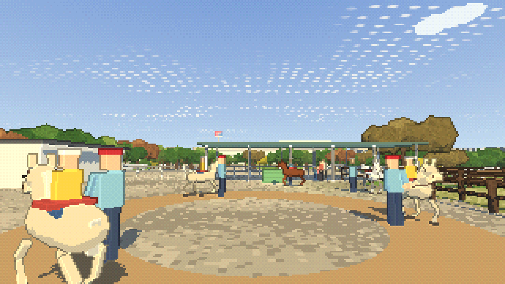
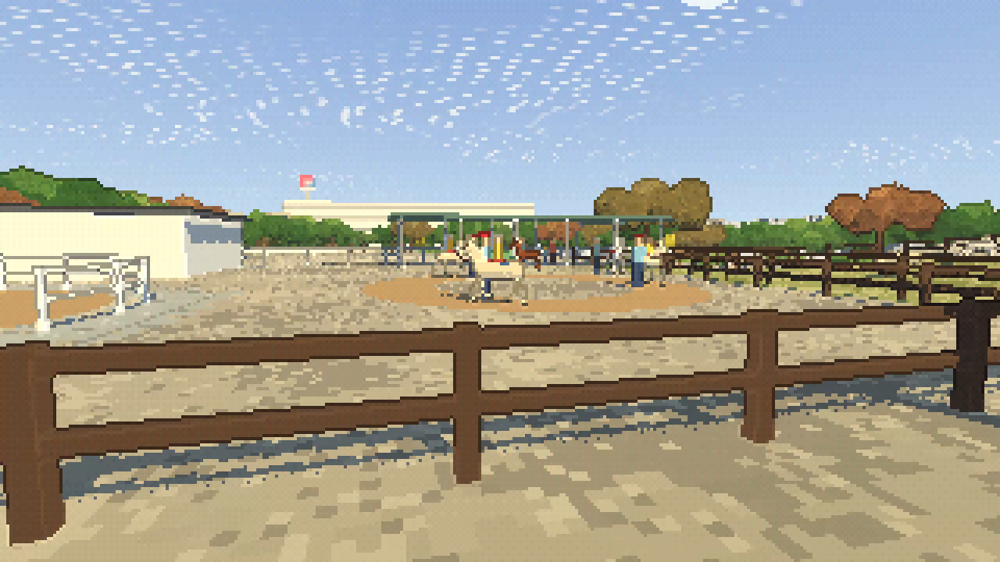
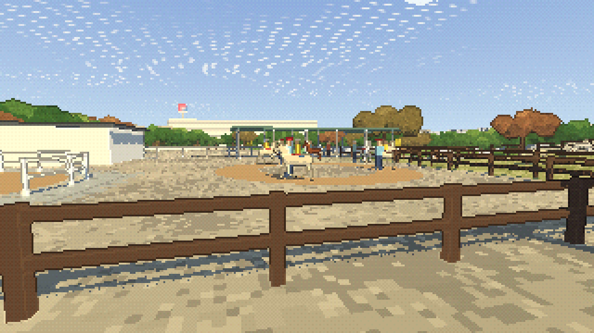

公開後：GitHub Pagesでの表示・接地・保存の検証結果
2026-10-27。初回改修の後、接地・手綱・毛色・斑模様・静止時の更新処理を再レビューして修正しました。元の地形高さに合うことだけではなく、描画した走路表面への接地を検証しています。
詳細設計と再レビュー結果 / 初回改修の比較 / 現在のなぎさページ
| 項目 | 再レビューでの修正 |
|---|---|
| 接地 | 約4cm高い走路への埋まりを修正。歩行の支持位置2,784点と待機・放牧28点を独立したレイで検証。 |
| 手綱 | 見える手を腕の先に付け、ポニー側の手へ接続。 |
| 毛色・模様 | 白い待機個体への誤った模様を除去。斑模様を板から胴体に沿う曲面へ変更。 |
| 負荷 | 静止時の脚IK・GPU転送を省略。移動や歩行再開に合わせて無効化。 |
| 検証 | 0/6/12秒の影・反射を含む比較を追加。シェーダーエラーも失敗として扱う。 |



6秒・12秒のH.264 MP4。圧縮・実時間のフレーム採取に伴う画素差があります。元の描画は0秒と6秒・12秒で一致しています。


描画・接地・負荷・継ぎ目 / 保存結果 / 動画のフレーム解析 / 他ページの回帰確認 / 回帰テスト / 検証したソースのハッシュ